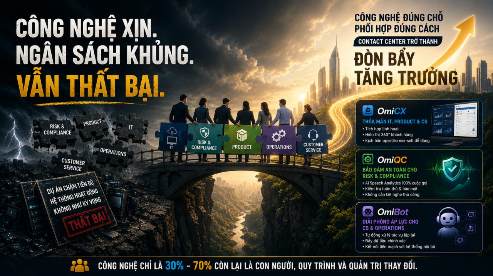
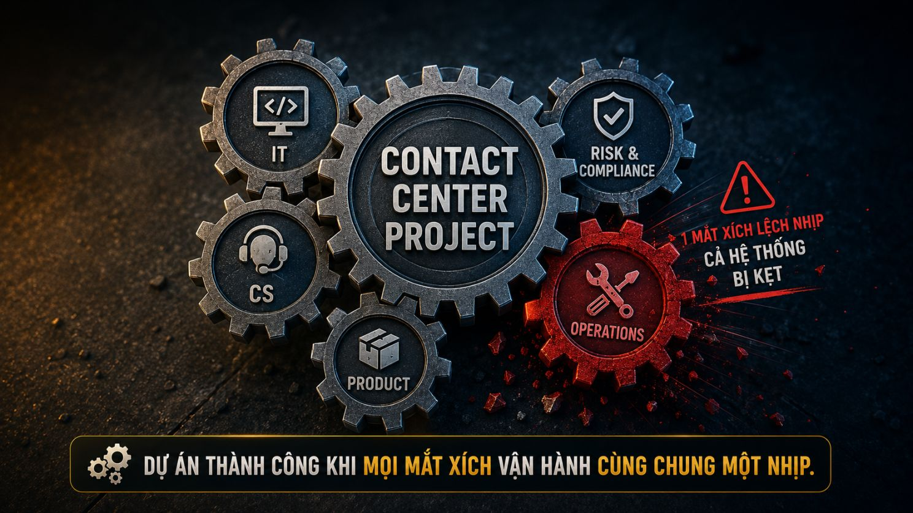

Trang chủ › Blog › Contact Center Insights · Mùa 1
Dữ liệu, AI và tương lai
Vì sao nhiều dự án Contact Center thất bại?

Trong hơn 7 năm làm việc trong ngành, có một pattern lặp đi lặp lại mà không ít lần được chứng kiến:
Doanh nghiệp phê duyệt ngân sách lớn. Chọn nhà cung cấp hàng đầu. Mua những bản quyền phần mềm đắt giá nhất. Tích hợp AI tân tiến nhất.
Mọi người kỳ vọng vào một cuộc cách mạng trải nghiệm khách hàng.
6 tháng sau dự án chậm tiến độ.
12 tháng sau go-live nhưng hệ thống hoạt động không như kỳ vọng.
18 tháng sau âm thầm "cắm" lại hệ thống cũ song song vì hệ thống mới chưa đáp ứng được.
Và câu hỏi luôn được đặt ra: Tại sao?
Công nghệ có vấn đề không? Thường là không. Vấn đề nằm ở một góc khuất trong quản trị mà rất ít RFP, rất ít buổi demo sản phẩm nào đề cập đến.
Câu trả lời mà nhiều vendor không muốn nói thẳng:
Phần lớn dự án Contact Center thất bại không phải vì công nghệ kém. Chúng thất bại vì các bộ phận trong doanh nghiệp hoạt động như những "ốc đảo" độc lập không phối hợp được với nhau. Ngành gọi đây là "Silo Effect" và đây là vấn đề phức tạp nhất, thường bị đánh giá thấp nhất trong bất kỳ dự án chuyển đổi Contact Center nào.
Tại sao triển khai Contact Center phức tạp hơn nhiều người nghĩ?
Nhiều doanh nghiệp nhìn vào dự án Contact Center và nghĩ đây là bài toán của IT và Customer Service.
IT lo hạ tầng, tích hợp hệ thống.
CS lo nghiệp vụ, đào tạo agent.
Xong.
Nhưng trong ngành BFSI một Contact Center hiện đại chạm vào hầu hết mọi bộ phận của tổ chức. Và một thay đổi nhỏ ở cấu hình tổng đài cũng có thể kích hoạt rủi ro hệ thống nếu thiếu sự tham gia của đúng người.
⚠️ Risk & Compliance. Không phải "bộ phận phê duyệt cuối"
Đây là bộ phận thường được mời vào dự án muộn nhất nhưng lại có quyền lực dừng dự án lớn nhất. Mỗi tính năng mới của Contact Center đều cần được Risk và Compliance review:
Dữ liệu khách hàng lưu trữ ở đâu, ai có quyền truy cập?
Ghi âm cuộc gọi có tuân thủ quy định Ngân hàng Nhà nước không?
Callbot AI có được phép thực hiện giao dịch tài chính tự động không và đến mức nào?
Kịch bản tư vấn có vi phạm quy định mis-selling không?
Nếu Compliance không ngồi vào bàn từ ngày đầu mọi thiết kế hệ thống có thể phải làm lại từ đầu khi họ review ở giai đoạn cuối. Đây là nguyên nhân số 1 khiến dự án Contact Center bị trễ tiến độ trong ngành BFSI.
📦 Product Team. Người biết sản phẩm nhưng thường không biết hotline
Agent mỗi ngày nhận hàng trăm cuộc gọi về sản phẩm thẻ tín dụng, khoản vay, bảo hiểm.
Nhưng khi sản phẩm thay đổi lãi suất mới, điều khoản mới, chính sách mới thông tin đó đến tay agent như thế nào?
Nếu Product không có quy trình phối hợp rõ ràng với Contact Center:
- → Agent tư vấn sai thông tin rủi ro pháp lý
- → Khách hàng nhận thông tin không nhất quán giữa app và hotline
- → Script lạc hậu so với sản phẩm đang thực tế triển khai
Mỗi lần Product ra mắt tính năng mới mà không "brief" Contact Center đó là một đợt khủng hoảng nhỏ đang được cài sẵn.
⚙️ Operations. Mắt xích thường bị bỏ qua nhất
Contact Center không hoạt động độc lập. Nó là một mắt xích trong chuỗi vận hành toàn tổ chức.
Khi tổng đài tiếp nhận yêu cầu trong 3 giây nhưng hậu cần xử lý mất 3 ngày trải nghiệm khách hàng vẫn bằng không.
Nếu quy trình phối hợp giữa Contact Center và Operations không được thiết kế rõ ràng từ đầu:
- → Agent không biết escalate lên đâu
- → Khách hàng bị "đá bóng" giữa các bộ phận
- → FCR giảm dù công nghệ hoàn toàn không có lỗi gì
Và còn nhiều bộ phận khác:
Legal khi có tranh chấp liên quan đến ghi âm cuộc gọi.
Marketing khi chiến dịch mới cần phản ánh vào script của agent.
HR khi tuyển dụng và đào tạo không theo kịp tiến độ triển khai.
Một dự án Contact Center không phải dự án của IT hay CS.
Đó là dự án của toàn tổ chức và cần được quản trị như vậy.

Vậy điều gì tạo ra sự khác biệt giữa dự án thành công và thất bại?
Qua hơn 7 năm đồng hành cùng các tổ chức tài chính trong hành trình chuyển đổi Contact Center tại Việt Nam, em nhận ra một điều:
Công nghệ chỉ chiếm 30% quyết định thành bại của dự án. 70% còn lại là: con người, quy trình phối hợp và quản trị thay đổi.
Đó là lý do MPT không tiếp cận dự án theo kiểu "bán tính năng" mà thiết kế giải pháp theo mô hình kiến trúc tổng thể, dung hòa lợi ích và ngôn ngữ của tất cả các bộ phận:
OmiCX: Thỏa mãn IT, Product và CS
Kiến trúc mở, tích hợp linh hoạt với core banking, CRM, hệ thống thẻ. Hiển thị thông tin 360 độ khách hàng ngay khi agent nhấc máy đảm bảo Product team dễ dàng đưa kịch bản upsell/cross-sell vào vận hành thực tế.
OmiQC: Bảo đảm an toàn cho Risk & Compliance
AI Speech Analytics tự động quét 100% cuộc gọi kiểm tra agent có đọc đúng điều khoản bắt buộc, có bảo mật thông tin khách hàng đúng chuẩn hay không. Tháo gỡ hoàn toàn nỗi lo của phòng Quản trị rủi ro mà không cần QA ngồi nghe thủ công.
OmiBot: Giải phóng áp lực cho CS và Operations
Tự động xử lý các tác vụ lặp lại tra cứu số dư, xác nhận thông tin đồng thời tự động đẩy dữ liệu sang các bộ phận vận hành nội bộ chính xác mà không cần can thiệp thủ công.
Trước khi đặt bút ký hợp đồng mua sắm công nghệ hãy thiết lập một Ban dự án liên phòng ban (Cross-functional team).
Hãy để IT, CS, Risk, Compliance, Product và Operations cùng ngồi lại định hình bài toán chung từ ngày đầu tiên. Khi tất cả các mắt xích đồng lòng công nghệ mới thực sự trở thành đòn bẩy. Đây là bài học mà ít vendor nào chịu nói thẳng với khách hàng vì nó có nghĩa là dự án sẽ phức tạp hơn ở giai đoạn đầu. Nhưng nó cũng có nghĩa là: xác suất thành công cao hơn rất nhiều.
Rất mong nghe góc nhìn thực tế từ anh/chị đang hoặc đã từng tham gia dự án triển khai Contact Center 👇
Theo kinh nghiệm của anh/chị — bộ phận nào thường là "mắt xích yếu nhất" gây bottleneck trong quá trình triển khai?
- ⚠️ Risk & Compliance — tiêu chuẩn bảo mật khắt khe, vào cuộc quá muộn
- 📦 Product & Operations — quy trình nghiệp vụ thay đổi liên tục, hệ thống không đuổi kịp
- 💻 IT — quá tải dự án, tích hợp core hệ thống kéo dài hơn dự kiến
- 👥 HR — tuyển dụng và đào tạo không theo kịp tiến độ triển khai
- 🔄 Cả trên — đang gặp phải cùng lúc
Câu trả lời của anh/chị có thể giúp nhiều người đang chuẩn bị dự án tương tự tránh được những bài học đắt tiền. Rất mong được trao đổi cùng anh/chị 👇